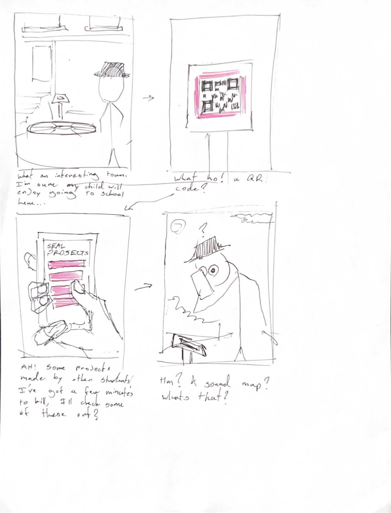

Sky LaRoche DES157b Q3 2023
Capstone Project Paper Prototype
Through creating and testing a paper prototype of my final project, I learned that the bulk of the interaction is very simple. This could be good or bad depending on how I execute it, but it's something to be cognizant of. I also learned that I should make the seal bigger than I made it in the paper prototype since my users were able to swipe through the whole thing in a matter of seconds. Futhermore, I learned that I'll have to be aware of the cutouts that most phones have for the camera, and make sure my composition doesn't overlap with it. Finally, I learned that my project doesn't translate very well into paper because a lot of its functionality relies on sound which is hard to execute in a paper environment.
